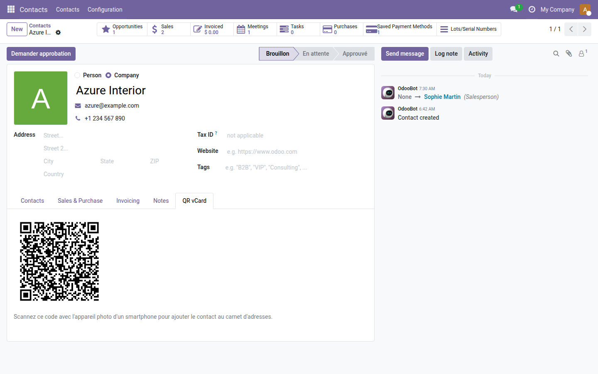
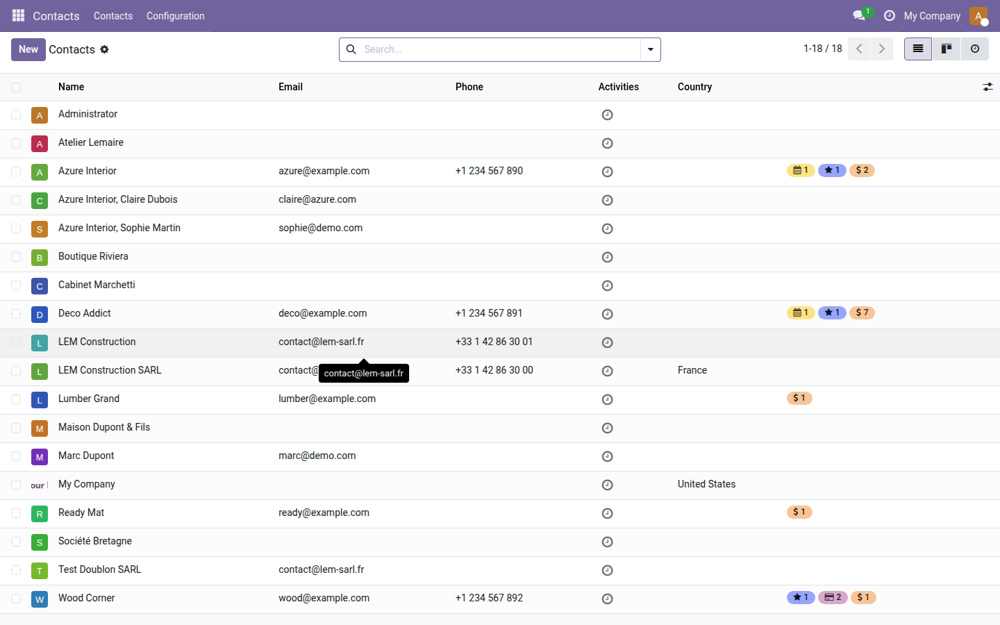

QR vCard Contact
Partagez n'importe quel contact Odoo en un scan — le code QR vCard se génère automatiquement sur la fiche.
Lors d'un rendez-vous, d'un salon ou d'une réunion client, échanger ses coordonnées prend du temps : dicter un numéro, épeler une adresse e-mail, donner une carte de visite qui finira perdue. Vos contacts sont déjà dans Odoo — pourquoi les ressaisir à la main sur le téléphone de votre interlocuteur ?
Ce que ça apporte
- 📲 Code QR vCard prêt à scanner — chaque fiche contact dispose d'un onglet dédié "QR vCard" affichant le code à montrer directement à l'écran ou à imprimer.
- ⚡ Génération automatique, sans action — le code se calcule à chaque modification du nom, de l'e-mail, du téléphone, de la fonction ou du site web ; toujours à jour, zéro clic.
- 📇 Format vCard 3.0 universel — compatible avec l'appareil photo natif d'iOS et d'Android : le contact (nom, société, fonction, e-mail, téléphone, site) s'ajoute au carnet d'adresses du smartphone en un tap.
- 🔁 Synchronisé avec Odoo — le QR code reflète toujours les données Odoo en temps réel : changement de poste, nouveau numéro, nouveau site — le code se régénère instantanément.
Aperçus réels
1. Onglet QR vCard sur la fiche contact
Le code QR vCard se génère automatiquement à l'ouverture de la fiche et se met à jour à chaque modification des coordonnées — aucun clic requis.

2. Vue liste des contacts
Le module s'active sur l'ensemble du carnet d'adresses sans configuration — chaque contact, nouveau ou existant, dispose immédiatement de son QR vCard.

Pourquoi l'adopter
- Zéro saisie manuelle pour votre interlocuteur : une seconde de scan suffit là où une dictée prend deux minutes.
- Aucune dépendance externe côté utilisateur final — l'appareil photo natif du téléphone suffit, aucune application tierce n'est requise.
- Idéal pour les commerciaux, consultants et équipes terrain qui rencontrent des clients sur le terrain et souhaitent laisser une impression professionnelle et sans friction.
- Module léger, sans configuration : une fois installé, le QR code apparaît sur toutes les fiches contacts existantes et futures.
Licence LGPL-3 — compatible Odoo 19.0. Nécessite la librairie Python qrcode (installée via pip). Support : support@odooskills.com.